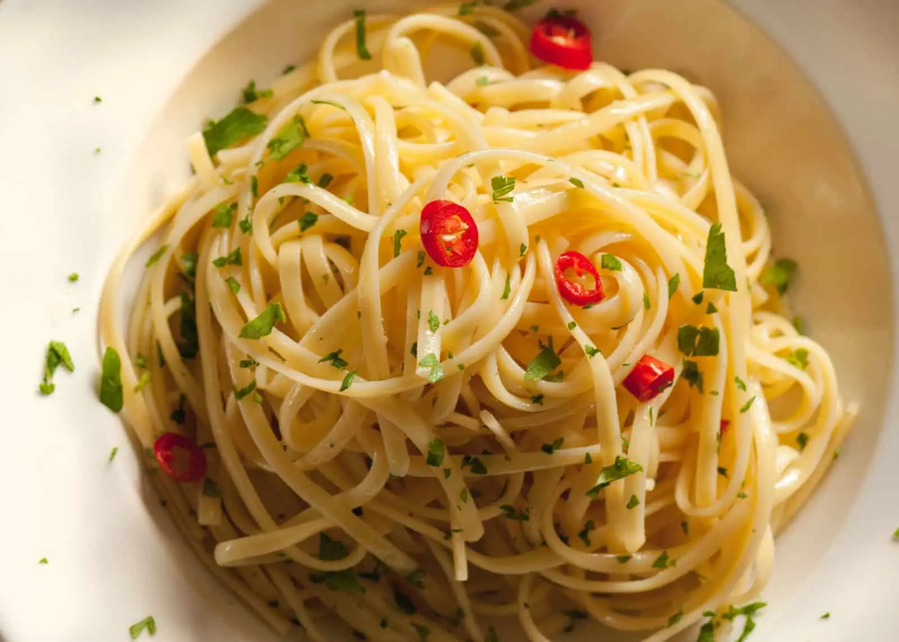

Aglio E Olio
Back to Recipes

A simple yet tasty pasta dish!
No two spaghetti aglio e olio recipes are alike, but this one is pretty true to the classic method.
The key is slowly toasting the garlic slices to a perfect golden-brown in the olive oil. If it's too light,
you don't get the full flavor and if it's too dark it gets bitter. My advice? Do it perfectly.
Ingredients
- 1 pound uncooked spaghetti
- 6 cloves of garlic
- 1/2 cup of olive oil
- red pepper flakes
- Fresh Parsley
- salt and pepper to taste
- parmigiano-reggiano
Instructions
- Bring a large pot of lightly salted water to a boil. Cook spaghetti in the boiling water,
stirring occasionally until cooked through but firm to the bite, about 12 minutes.
Drain and transfer to a pasta bowl.
- Combine garlic and olive oil in a cold skillet. Cook over medium heat to slowly toast garlic, about 10 minutes.
Reduce heat to medium-low when olive oil begins to bubble. Cook and stir until garlic is golden brown,
about another 5 minutes. Remove from heat.
- Stir red pepper flakes, black pepper, and salt into the pasta. Pour in olive oil and garlic,
and sprinkle on Italian parsley and half of the Parmigiano-Reggiano cheese; stir until combined.